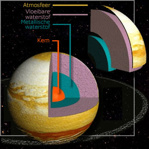

Jupiter

Jupiter is de grootste planeet va het zonnestelsel. Het is een gasreus. Dit betekend dat Jupiter geen vast oppervlak heeft. Het duurt ongeveer twaalf jaar om een rondje om de zon te maken. De doorsnede is 142.800 kilometer
De kern is grotendeels uit nikkel-ijzer. Dan heb je een laag van metalische waterstof, dan vloeibare waterstof en dan heb je de atmosfeer. Jupiter adsorbeert twee keer zoveel licht van de zon, dat betekend dat het dus twee keer zoveel warmer is op Jupiter.
De atmosfeer is 3000 kilometer dik en bestaat uit gas. Vergeleken met de aarde is deze drie keer groter. Omdat er lage temperaturen zijn op Jupiter lijkt de atmosfeer meer uit een vloeistof. Er zijn erg veel stormen op Jupiter. Bijvoorbeeld de bekende grote rode vlek. Dit wordt waarschijnlijk veroorzaakt door de hoge temperaturen in de kern en dat de planeet zo snel draait om zijn as.